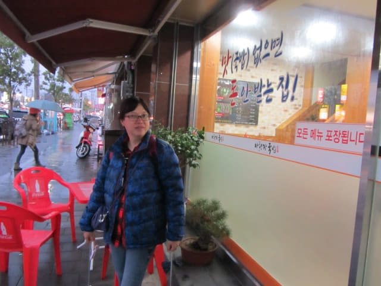
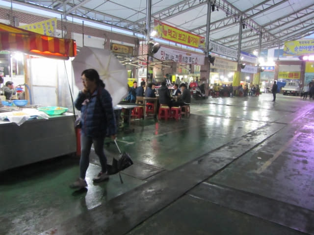
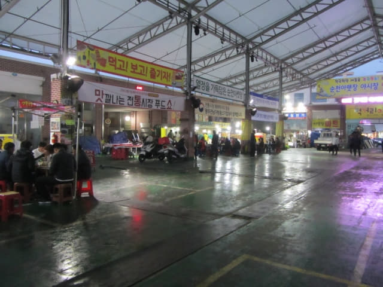
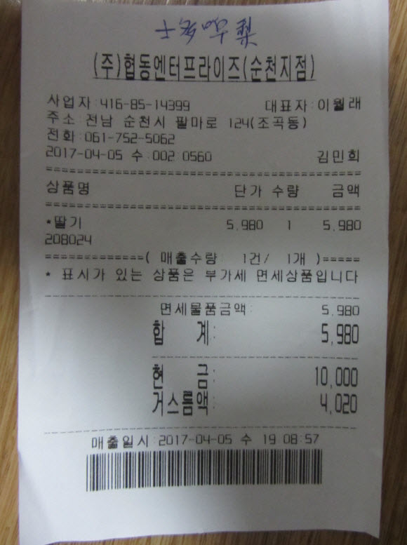
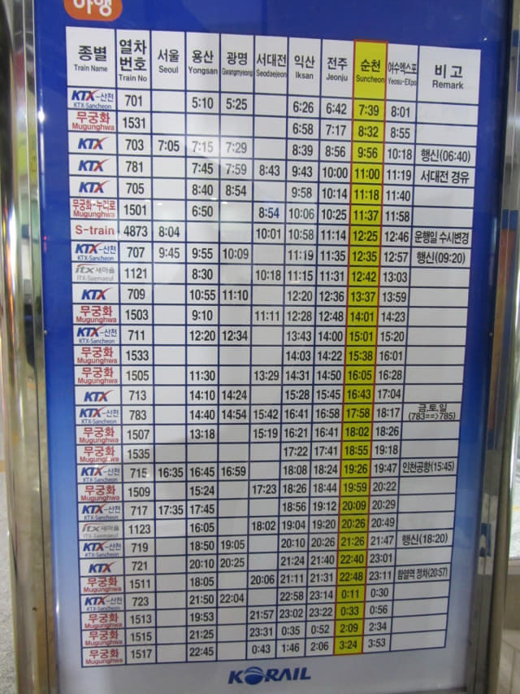
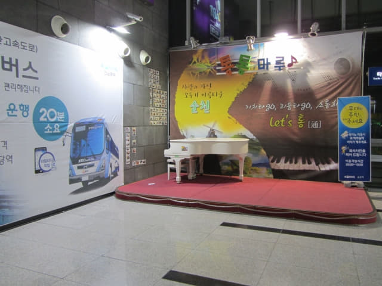
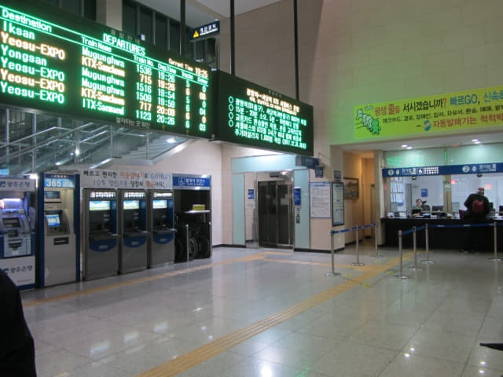
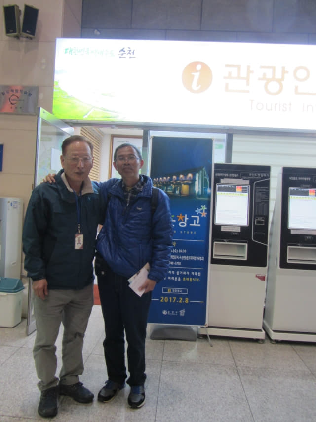
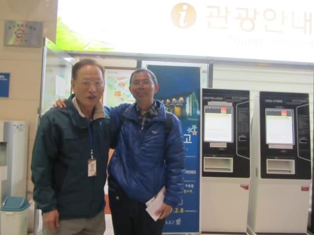
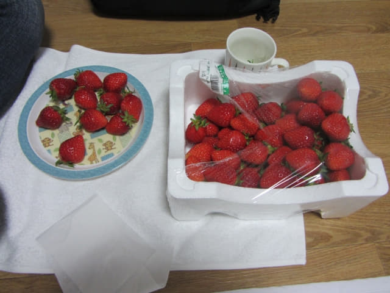

在順天下集市的「아랫장국밥」餐館吃完豬頭肉湯飯晚餐, 接著是步行往順天火車站, 然後才返回 Suncheon Guesthouse Happy Tour 賓館 。離開餐廳, 雨勢仍然很大, 完全沒有緩和的跡象。

順天下集市 熱鬧夜市
撐傘匆匆走過馬路, 穿過順天下集市, 平時灰暗冷清的順天下集市, 晚上燈火火著, 所有食肆都在營業, 而且坐滿了食客, 人聲鼎沸, 十分熱鬧。還以為對順天已經十分熟悉, 這裡也走過不知多少次, 但竟然現在才知道, 順天下集市主要是做夜市的。


離開順天下集市, 再一次穿過橫躺順天東川兩岸的豐得橋, 東川兩岸都亮了燈, 把櫻花照得如幻似夢, 可惜大雨, 沒有拍照; 繼續沿馬路向前走一會便來到順天火車站對面的 NH Bank, 在旁邊的超級市場買了一超大盒草莓, 十分新鮮的, 只售 5,900韓元, 十分便宜。

因我們在順天逗留的其中一天會安排往麗水攀登靈鷲山, 欣賞漫山遍野的杜鵑花, 當然, 攀登靈鷲山一定不可以在下雨天前往, 但預測未來幾天都是下雨, 其實這行程極有可能告吹的, 但當然也要預先計劃好行程。靈鷲山在麗水, 最快捷便宜是乘火車前往, 所以便安排今晚預先往順天火車站查詢早上的火車班次。
從 NH Bank 旁的超級市場走過馬路便是順天火車站, 進入大堂, 確定了早上往麗水的無窮花號火車, 其實只有 8:32 這班次, 其餘都是超昂貴的 KTX 火車。從順天站乘火車往麗川站 (여천역), 無窮花號火車只需 2,600 韓元, 而 KTX 火車卻要 8,000韓元! 不用問, 我們當然是選擇廉價的無窮花號火車啦!

確定了往麗水麗川站後, 便在火車站內四處逛逛。


認識了一位一見如故的新朋友
大堂內有一間旅客咨詢中心, 便進內看看, 櫃台內的職員看見我, 便立即用英文叫我:「你認得我嗎?」
想了一會, 他是誰? 為什麼一點印象也沒有? 唯有對他說:「對不起! 你是誰呀?」
「你不記得我呀? 你剛才是不是在火車站問往寶城巴士時刻表?」
「呀! BAO-SING」
「不! 是 BOSING。」他又糾正我的韓語發音。
接著便打開了話題, 想不到和他一見如故, 竟然是那麼投契, 言無不盡, 天文、地理、 人生哲理、中國唐詩他也懂小小, 開心的時間過得特別快, 如果不是她來找我, 也不知道就這樣和他傾談了一小時。
道別前當然要拍照留念啦!


接著撐傘匆匆走回 Suncheon Guesthouse Happy Tour 賓館, 返回房間, 兩人共吃了十多顆草莓, 其餘的放在走廊的冰箱。草莓的數量很多, 可以分三晚吃。這麼大盒的新鮮草莓, 只售 5,900韓元, 真是超值。

睡前再看看韓國氣象廳的中期天氣預測, Oh! My God! 未來四天都是下雨, 不知如何安排行程了, 唯有明天請教老天爺指點迷津算了!